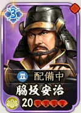
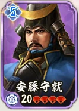
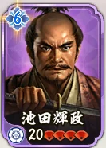
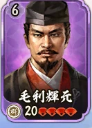
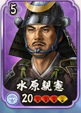
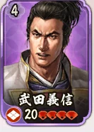
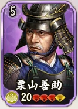
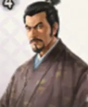

難易度順 01 / 08
脇坂安治
🟢 簡単
足軽 · 兵種Lv2
敵の顔・兵種・危険要素を確認して、狙う土地を選びます。
属性ポイント配分を済ませる。 推奨条件は参考記事の目安です。凸数・戦法・兵種相性によって必要条件は変わります。
参考記事の評価順。兵種Lvは土地Lv・武将Lvとは別の数値です。難易度は絶対的な勝率を示しません。
8 / 8 編成 · 簡単 → 困難








該当する編成はありません。条件を変えてください。
はてなの真戦ブログ：S4「四雄怒涛」序盤攻略まとめ（2026年7月25日）。難易度・兵種・危険要素・推奨条件を参照。確認日：2026年9月27日。
顔画像は既存武将画像・実戦戦報の切り抜き・上記記事の守備軍画像を使用。稲葉重通・穴山信君・織田信清の顔画像は同記事より。記事の利用案内に従い出典を記載しています。ゲーム画像の権利は各権利者に帰属します。
土地6は実戦戦報ページを追加しました。土地7の難易度表は未収録です。